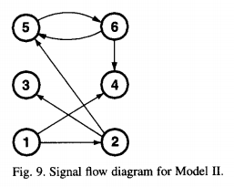
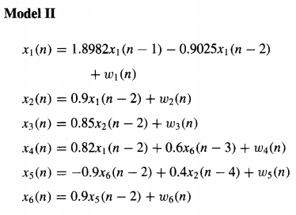
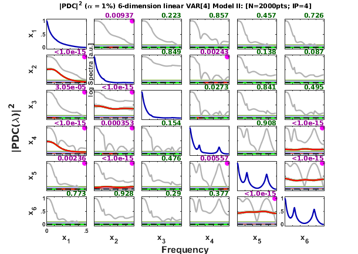
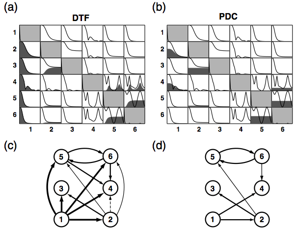
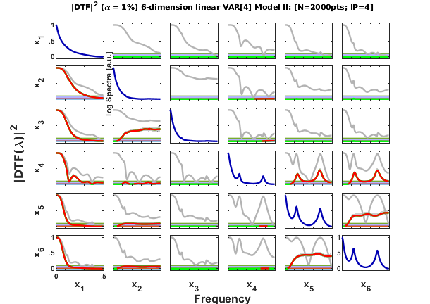

Contents
Baccala & Sameshima (2001b) 6-dimension VAR[4] Scalp Model II
Description:
Baccala & Sameshima. Overcoming the limitations of correlation analysis for many simultaneously processed neural structures, Progress in Brain Research, 130:33--47, 2001.
http://dx.doi.org/10.1016/S0079-6123(01)30004-3
Model II: 6-dimension VAR(4) Scalp model
clear; clc; format compact; format short
Data sample generation
nDiscard = 5000; % number of points discarded at beginning of simulation nPoints = 2000; % number of analyzed samples points N=nDiscard+nPoints; % number of simulated points u = fbaccala2001b_model2( nPoints, nDiscard ); [nSegLength,nChannels]=size(u); chLabels = {'x_1';'x_2';'x_3';'x_4';'x_5';'x_6'}; % or chLabels = []; fs = 1;
======================================================================
Linear VAR[4] Model II
Baccala & Sameshima. Prog Brain Research, 130:33--47, 2001.
x1==>x2 x1==>x4 x2==>x3 x2-->x5 x5==>x6 x6-->x4 x6==>x5
======================================================================
Interaction diagram

Figure 9 from Baccala & Sameshima. Progr in Brain Res, 130:33--47, 2001.
Equation

Data checking and pre-processing: detrending and normalization options
flgDetrend = 1; % Detrending the data set flgStandardize = 0; % No standardization [nChannels,nSegLength] =size(u); if nChannels > nSegLength u = u.'; [nChannels,nSegLength]=size(u); end if flgDetrend for i=1:nChannels, u(i,:)=detrend(u(i,:)); end disp('Time series were detrended.'); end if flgStandardize for i=1:nChannels, u(i,:)=u(i,:)/std(u(i,:)); end disp('Time series were scale-standardized.'); end
Time series were detrended.
MVAR model estimation
disp('Running MVAR estimation routine.') maxIP = 30; % maximum model order to consider. alg = 1; % 1: Nutall-Strand MVAR estimation algorithm criterion = 1; % 1: AIC, Akaike Information Criteria [IP,pf,A,pb,B,ef,eb,vaic,Vaicv] = mvar(u,maxIP,alg,criterion); disp(['Number of channels = ' int2str(nChannels) ' with ' ... int2str(nSegLength) ' data points; MAR model order = ' int2str(IP) '.']);
Running MVAR estimation routine. maxOrder limited to 30 IP=1 vaic=101975.629017 IP=2 vaic=92209.898783 IP=3 vaic=91310.061187 IP=4 vaic=91090.672969 IP=5 vaic=91125.934346 Number of channels = 6 with 2000 data points; MAR model order = 4.
Testing for adequacy of MAR model fitting through Portmanteau test
h = 20; % testing lag MVARadequacy_signif = 0.05; % VAR model estimation adequacy significance % level aValueMVAR = 1 - MVARadequacy_signif; % Confidence value for the testing flgPrintResults = 1; % Print results on Command Window [Pass,Portmanteau,st,ths] = mvarresidue(ef,nSegLength,IP,aValueMVAR,h,... flgPrintResults);
====================================================================================================
MVAR RESIDURES TEST FOR WHITENESS
----------------------------------------------------------------------------------------------------
Good MAR model fitting! Residues white noise hypothesis NOT rejected.
Pass = 0.0263889
st = 587.856
Granger causality test (GCT) and instantaneous GCT
gct_signif = 0.01; % Granger causality test significance level igct_signif = 0.01; % Instantaneous GCT significance level flgPrintResults = 1; [Tr_gct, pValue_gct] = gct_alg(u,A,pf, gct_signif,flgPrintResults); [Tr_igct, pValue_igct] = igct_alg(u,A,pf,igct_signif,flgPrintResults);
====================================================================================================
GRANGER CAUSALITY TEST
----------------------------------------------------------------------------------------------------
Connectivity matrix:
NaN 0 0 0 0 0
1 NaN 0 0 0 0
0 1 NaN 0 0 0
1 0 0 NaN 0 1
0 1 0 0 NaN 1
0 0 0 0 1 NaN
Granger causality test p-values:
NaN 0.0818 0.9485 0.7920 0.9900 0.9266
0 NaN 0.5586 0.1823 0.9916 0.6186
0.4169 0 NaN 0.1940 0.4521 0.3048
0 0.5432 0.2264 NaN 0.3444 0
0.4062 0 0.1576 0.1531 NaN 0
0.2485 0.5329 0.7876 0.0917 0 NaN
====================================================================================================
INSTANTANEOUS GRANGER CAUSALITY TEST
----------------------------------------------------------------------------------------------------
Instantaneous connectivity matrix:
NaN 0 0 0 0 0
0 NaN 0 0 0 0
0 0 NaN 0 0 0
0 0 0 NaN 0 0
0 0 0 0 NaN 0
0 0 0 0 0 NaN
Instantaneous Granger Causality test p-values:
NaN 0.8332 0.0125 0.1948 0.0735 0.3041
0.8332 NaN 0.6124 0.1064 0.6010 0.7290
0.0125 0.6124 NaN 0.1580 0.1760 0.0347
0.1948 0.1064 0.1580 NaN 0.4236 0.7903
0.0735 0.6010 0.1760 0.4236 NaN 0.0669
0.3041 0.7290 0.0347 0.7903 0.0669 NaN
>>>> Instantaneous Granger Causality NOT detected.
====================================================================================================
Original PDC estimation
PDC analysis results are saved in c struct. See asymp_pdc.m for more detail.
nFreqs = 128; % Number of points in the frequency scale. alpha = 0.01; % Significance level for PDC testing metric = 'euc'; % euc = Euclidean, original PDC or DTF; % diag = generalized PDC, gPDC, or gDTF / DC; % info = information PDC, iPDC, or iDTF. c = asymp_pdc(u,A,pf,nFreqs,metric,alpha); % Estimate PDC and asymptotic statistics c.Tragct = Tr_gct; c.pvaluesgct = pValue_gct;
Matrix-Layout Plotting
flgPrinting = [1 1 1 2 3 1 2]; flgColor = 1; flgScale = 1; flgMax = 'tci'; flgSignifColor = 3; % Line color for PDC2/DTF2 plotting on the frequency scale. % 3: red (significat) / green (not significant) w_max = fs/2; strTitle = ['6-dimension linear VAR[4] Model II: [N=' int2str(nSegLength) ... 'pts; IP=' int2str(c.p) ']']; strID = 'Baccala & Sameshima (2001) Model II'; % figure window bar ID [h1,~,~] = xplot(strID,c,flgPrinting,fs,w_max,chLabels, ... flgColor,flgScale,flgMax,flgSignifColor); xplot_title(alpha,metric,'pdc', strTitle);
Result from the original article, Baccala & Sameshima (2001b) Figure 6b.

Original DTF estimation
DTF analysis results are saved in d struct.
d = asymp_dtf(u,A,pf,nFreqs,metric,alpha); % Estimate DTF and asymptotic statistics
Matrix-Layout Plotting
flgPrinting = [1 0 1 2 0 1 2]; % not plotting threshold and coherence [h2,~,~] = xplot(strID,d,flgPrinting,fs,w_max,chLabels, ... flgColor,flgScale,flgMax,flgSignifColor); xplot_title(alpha,metric,'dtf', strTitle);
Animation
Gif